Explore Vienna
A Brief History
Vienna grew from a Roman camp and medieval ducal seat into the capital of the Habsburg monarchy. The Hofburg, Schönbrunn, and baroque churches expanded as the court patronized music and the arts from the 17th century onward. After 1918 the city became the capital of the Austrian Republic. Postwar reconstruction preserved the Ringstrasse boulevard and historic center, inscribed as a UNESCO World Heritage site in 2001.
Attractions Map
Top Sights & Activities

Schloss Belvedere
The Belvedere is a historic building complex and art museum in Vienna, Austria. The complex consists of two Baroque palaces, the Upper and Lower Belvedere, together with the Orangery, the Palace Stables, and a formal Baroque garden. It is located in the city's third district, Landstraße, on the south-eastern edge of Vienna's historic centre.
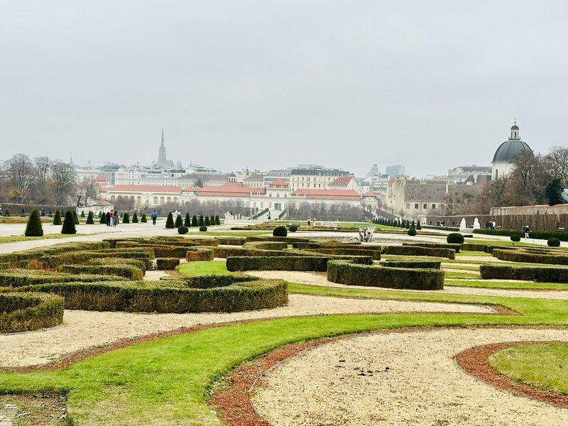
Belvedere-Schlossgarten
The meticulously landscaped terraced gardens connecting the Upper and Lower Belvedere palaces. Designed in the 18th century by Dominique Girard, the Baroque layout features symmetrical parterres, cascading fountains, and classical sculptures.
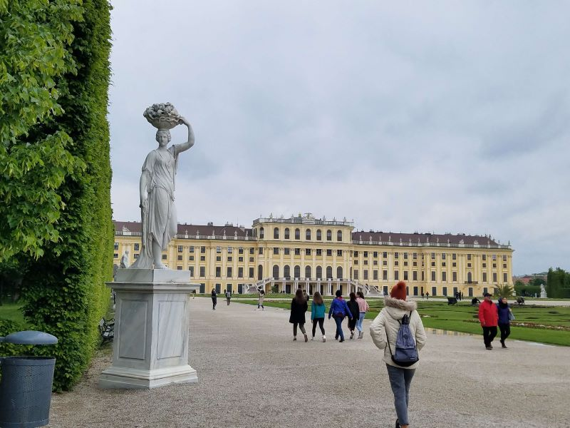
Schloss Schönbrunn
Schönbrunn Palace was the main summer residence of the Habsburg rulers, located in Hietzing, the 13th district of Vienna. The name Schönbrunn has its roots in an artesian well from which water was consumed by the court. The 1,441-room Baroque palace is one of the most important architectural, cultural, and historic monuments in the country.

Gloriette Schönbrunn
A classical pavilion erected in 1775 on the crest of the hill behind Schönbrunn Palace. Originally built to serve as a focal point and dining hall for the emperor, it offers extensive panoramic views over the palace grounds and Vienna.
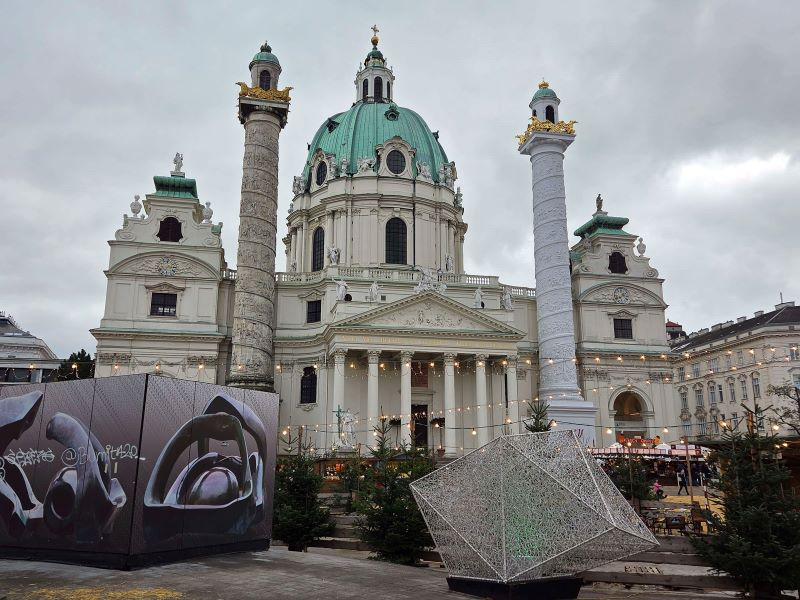
Karlskirche
The Karlskirche is a Baroque church in the Karlsplatz in Vienna, Austria. The church is dedicated to Saint Charles Borromeo, a leading figure of the Counter-Reformation. The church is located on the border of Wieden and the Innere Stadt, the city centre.
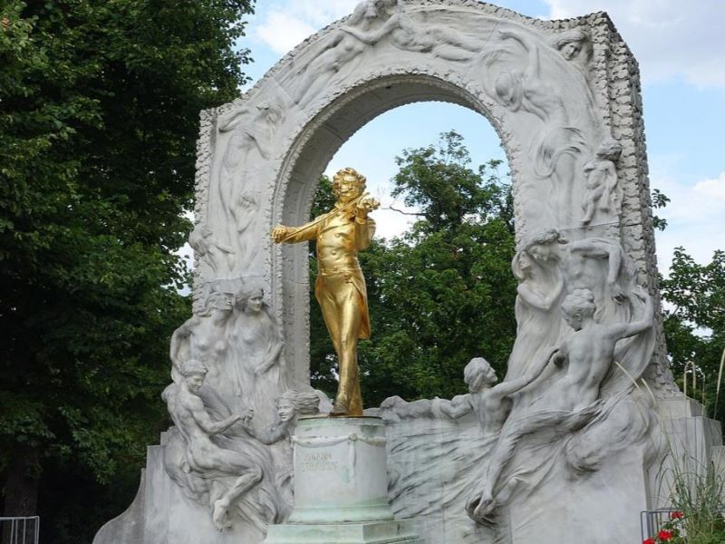
Johann Strauss monument
A, beloved golden statue spectacularly honoring Austria's famous 'Waltz King'. Set beautifully within the lush, manicured Stadtpark, it serves as a iconic, photographed symbol of Vienna's musical soul.
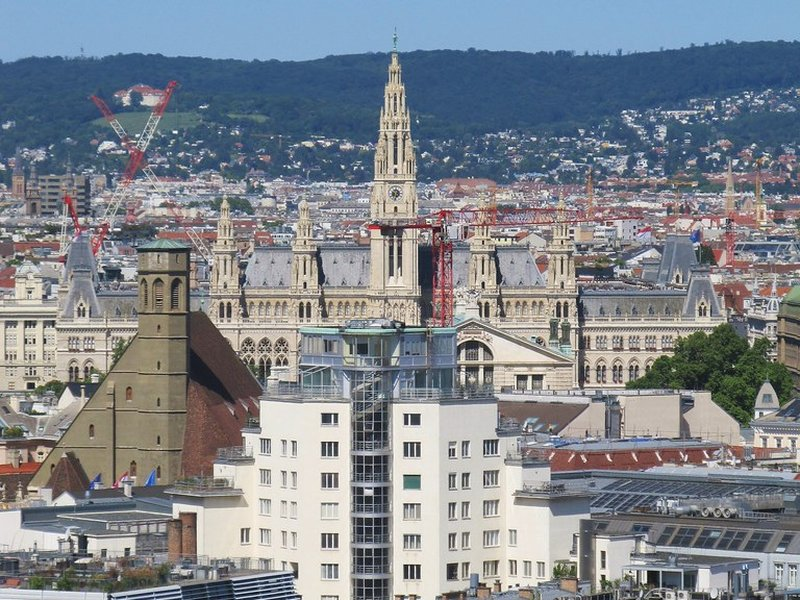
Vienna City Hall
The Vienna City Hall is the town hall of Vienna, Austria, located in the Innere Stadt on the Rathausplatz, off the Ringstrasse. The Gothic Revival building was designed by Friedrich von Schmidt and constructed between 1872 and 1883. It houses the offices of the Mayor of Vienna, as well as the city and state government.
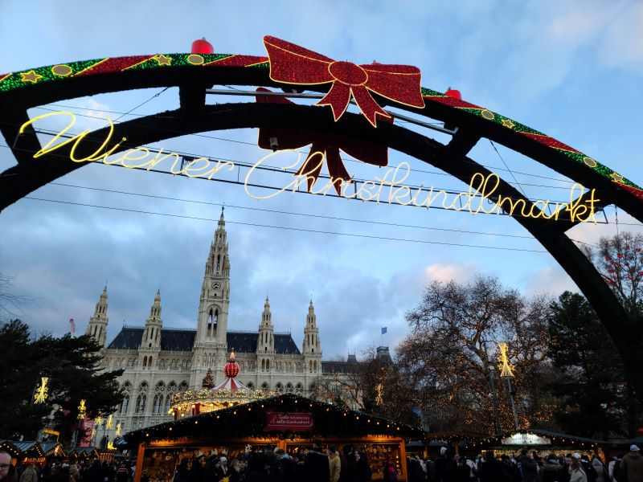
Rathausbrunnen
A decorative public fountain situated in the park adjacent to the Vienna City Hall. The classical monument provides a peaceful resting area within the bustling civic center, surrounded by 19th-century Neo-Gothic architecture.
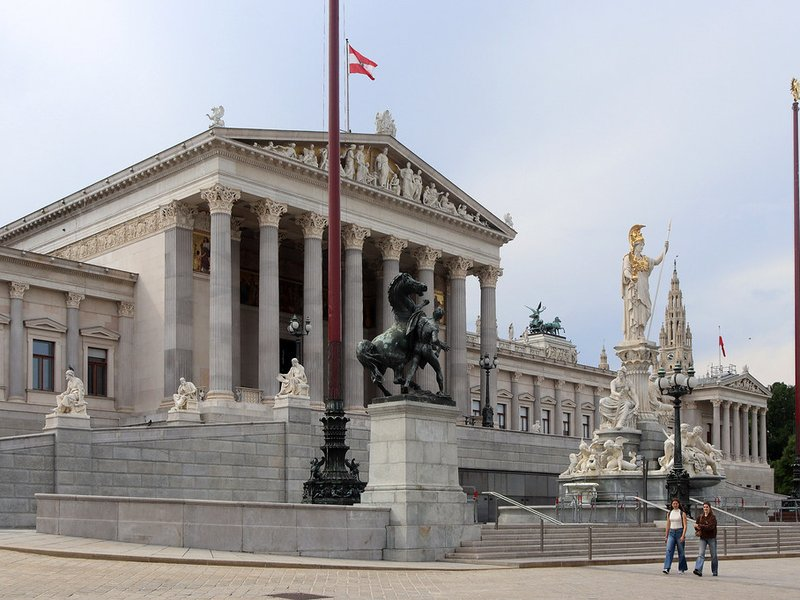
Parlament Österreich
The seat of the Austrian National and Federal Councils, constructed between 1874 and 1883. Designed by Theophil Hansen in a profound Greek Revival style, the monumental building is fronted by the iconic statue of Pallas Athena.
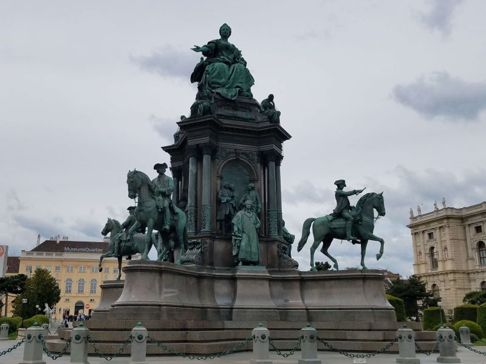
Maria-Theresien-Platz
Maria-Theresien-Platz is a large public square in Vienna, Austria, that joins the Ringstraße with the Museumsquartier, a museum of modern arts located in the former Imperial Stables. Facing each other from the sides of the square are two near identical buildings, the Naturhistorisches Museum and the Kunsthistorisches Museum. The buildings are near identical, except for the statuary on their façades.
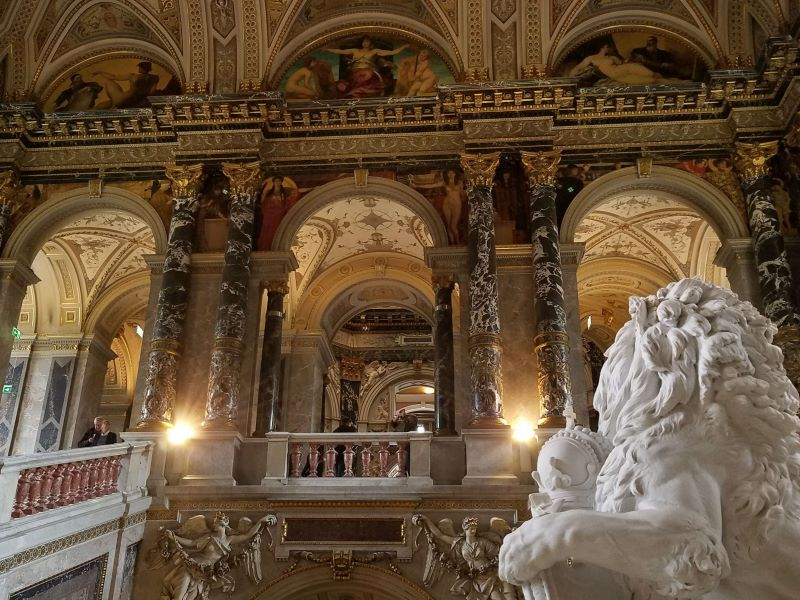
Kunsthistorisches Museum Wien
The Kunsthistorisches Museum Wien is an art museum in Vienna, Austria. Housed in its festive palatial building on the Vienna Ring Road, it is crowned with an octagonal dome. The term Kunsthistorisches Museum applies to both the institution and the main building.
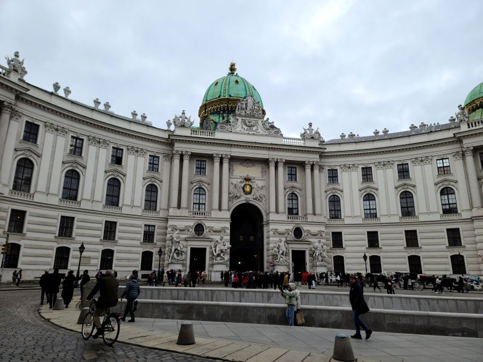
Hofburg
The Hofburg is the former principal imperial palace of the Habsburg dynasty in Austria. Located in the center of Vienna, it was built in the 13th century by Ottokar II of Bohemia and expanded several times afterwards. It also served as the imperial winter residence, as Schönbrunn Palace was the summer residence.
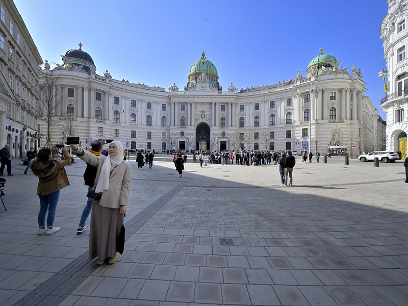
Michaelerplatz
A circular square at the center of Vienna, defined by the grand Michaelertrakt wing of the Hofburg Palace. It is notable for its exposed Roman ruins in the center, contrasting the surrounding monumental Baroque and Secessionist architecture.

Kohlmarkt
The Kohlmarkt is one of the most famous streets in the center of Vienna. It stretches from Michaelerplatz to the Graben. The street is considered to be Vienna's luxury shopping street due to a high density of jewelers and branches of international fashion labels.
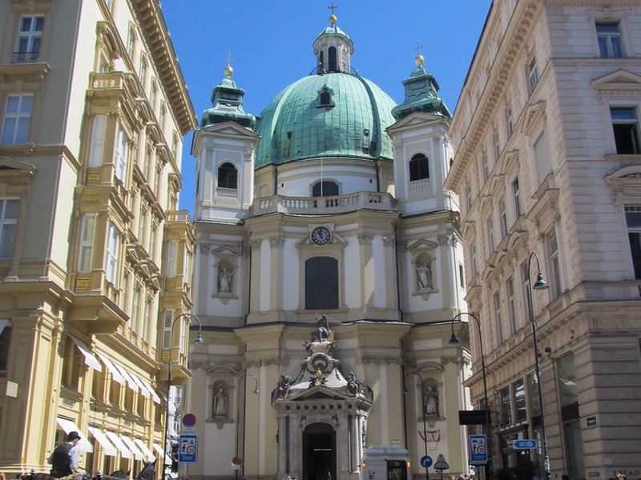
Peterskirche
An, magnificent Baroque church beautifully boasting an intricate, beautifully lavishly decorated interior. It stands powerfully as one of the most beautiful, historic places of worship in Vienna.
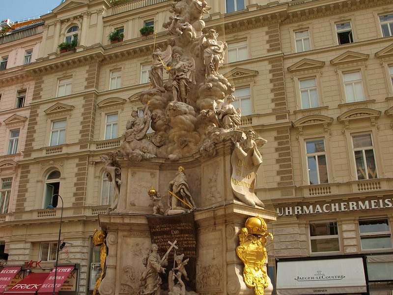
Column of Pest
A profound, dramatic Baroque memorial spectacularly erected directly on the Graben. It powerfully commemorates the devastating Great Plague, beautifully functioning as an historic symbol of profound divine deliverance.
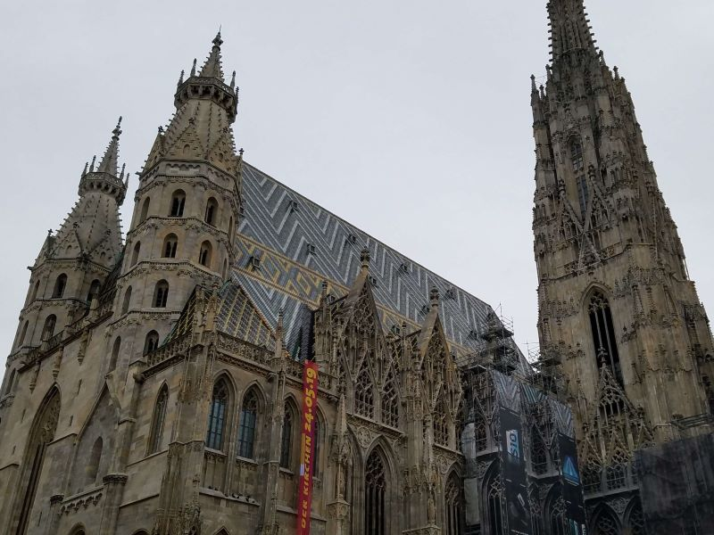
St. Stephen's Cathedral
The grand, historic mother church of the Roman Catholic Archdiocese. Its, beautifully tiled roof powerfully makes it the most iconic, beloved architectural symbol of Vienna.